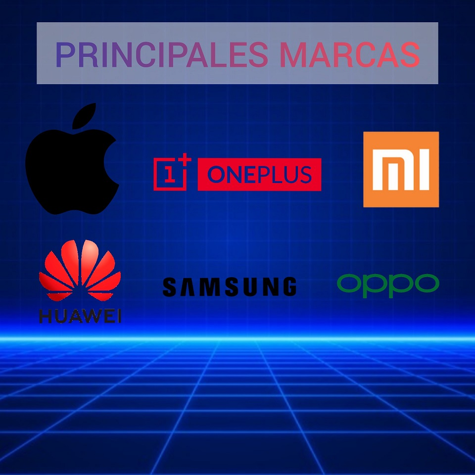

¿Qué es un Dispositivo Móvil?
Un Dispositivo móvil, o también llamado como ordenador de bolsillo o ordenador de mano, es un tipo de computadora de tamaño pequeño,
con capacidades de procesamiento, con conexión a Internet, con memoria, diseñado específicamente para una función, pero que pueden llevar a cabo otras funciones más generales.
Actualmente, estos dispositivos han mejorado en todos los aspecto, ya sea en Cámara Fotográfica, Procesador e incluso la duración de la Batería
¿De qué está Compuesto un Dispositivo Movil?
Un Dispositivo Móvil esta compuesto principalmente de dos cosas el Software y el Hadware.
A Continuación os procederé a esplicar que es cada cosa:
El Sofweare es elonjunto de programas y rutinas que permiten a la computadora realizar determinadas tareas.(Sistema Operativo y Capa de Personalización)
En cambio, el Hadware es el conjunto de elementos físicos o materiales que constituyen una computadora o un sistema informático.
En la actulidad, hay 3 Sistemas Operativos:
- Android
- IOS
- Harmony OS
